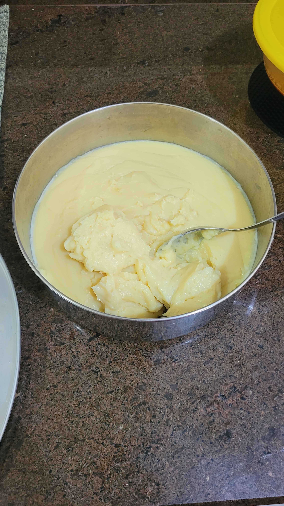

Brigadeiro Branco

Description
Also known as White Chocolate Brigadeiro.
The Brigadeiro is a staple of brazilian sweets and there isn't a single person in the country that don't know at least one variation of this recipe. It can be done in multiple ways, with any kind of ingredients. The most common is done with dark chocolate or powdered cocoa.
This is one of the most common variations of the desert, with white chocolate and powdered milk!
Ingredients
You'll need:
- 200g of white chocolate;
- 400g of powdered milk;
- 200g of unsalted butter;
- 395g of Condensed Milk;
- 200g of Heavy Cream;
Steps
In a pan:
- Melt the chocolate with a double boiler technique so that it doesn't burn;
- Mix the melted chocolate thoroughly with the powdered milk, the unsalted butter, condensed milk and heavy cream;
- When the mixture become homogenous, bring it to a small fire;
- Mix it constantly until it start releasing from the pan;
- Transfer it from the pan to another container;
Optional Steps
Let it cool before eating;
Roll the cooled desert with your hands and cover it with granulated chocolate or powdered milk.
Enjoy!